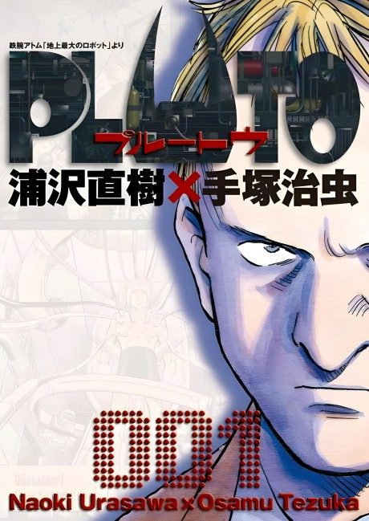

Animeter
 Anime
Anime
Manga2023, Action, Drama, Mecha
Pluto
PLUTO
AniList8.4
Animeter—
Episodes8 ep
MangaAdapted
Key events
These are spoilers. They stay blurred until you reveal them, one at a time or all at once.
The Robot Murders Ep 1–3
- The beloved Swiss robot Mont Blanc is found destroyed with horn-like objects at the head.
- Gesicht asks Atom, another of the seven great robots, to help analyze the murders.
- Gesicht begins to suspect his own memory data has been altered.
Atom and Uran Ep 4
- Ochanomizu takes in a battered robot dog and tries to repair it.
- A mysterious man claiming to be the dog's owner visits the professor's house.
Gesicht's Past Ep 5–6
- Gesicht escorts Adolf Haas to a safe house and investigates his past.
- Hercules senses the approaching threat.
- In Persia Gesicht meets Abullah and catches him in a lie.
- Gesicht recovers his memory of killing a human after his robot child was destroyed.
Atom's Revival Ep 7
- Tenma tries to restore Atom using Gesicht's memories.
- Epsilon refuses to fight and is urged to evacuate.
Bora Ep 8
- Ochanomizu watches Atom's erratic behavior after his revival.
- Dr. Tenma confronts his past and the mastermind behind the murders is revealed.
- Atom faces Pluto as a world-destroying weapon is triggered.